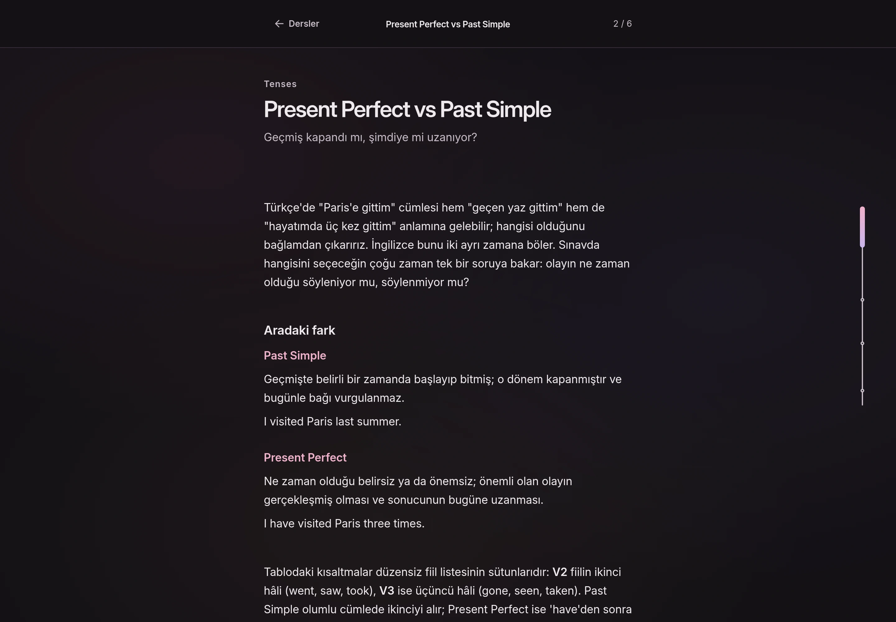
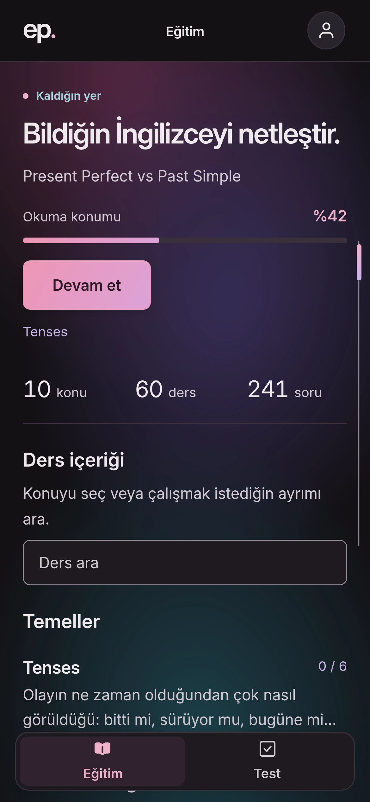

Sezgini bilgiye dönüştür.
Bildiğin İngilizce.
Daha net
ayrımlar.
Doğru cevabı sezmekten, neden doğru olduğunu anlamaya. Makale dersleri ve açıklamalı sorularla kendi çalışma alanın.
Ücretsiz. Hesapsız. İlerlemen kendi tarayıcında.


- Konu
- 10
- Makale dersi
- 60
- Açıklamalı soru
- 241
Birbirine benzeyen kullanımlar.
Aralarındaki önemli farklar.
İki ekran. Bir çalışma akışı.
Oku. Uygula.
Gereken yere dön.
Eğitim’de ayrımı aç. Test’te ne düşündüğünü gör. Açıklamalar, bir sonraki adımına yol göstersin.
01 / Oku
Kulağına doğru gelenin nedenini bul.
Birbirine benzeyen kullanımları aynı makale içinde karşılaştır. İngilizce örnekler ve Türkçe açıklamalarla, anlamı değiştiren ayrıntıyı kendi hızında aç.
İstersen önce sezgini yokla. Dersin başındaki soru açık gelir; cevaplamadan okumaya geçebilirsin.
Bir derse göz at
Bilmek isteyebileceklerin
Açık cevaplar.
English Prep
Bir ayrımı netleştir.
Oradan devam et.
Tarayıcıda başla. İstersen ana ekranına ekle.
Çalışmanın temposu sende.